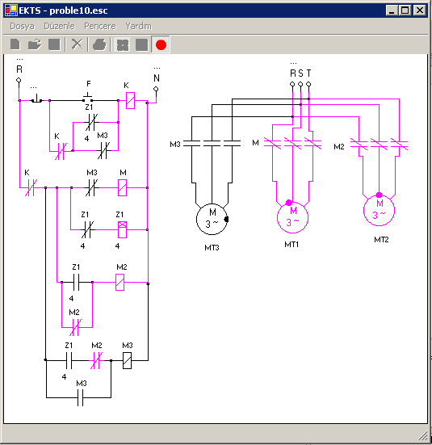
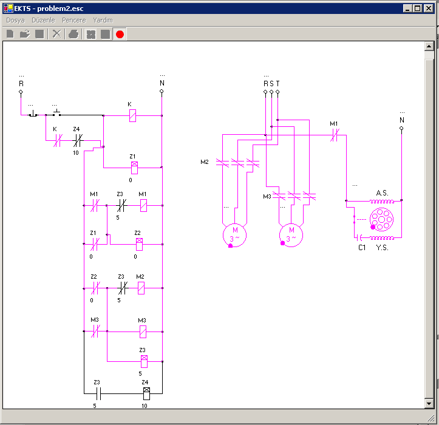

3 Adet 3 fazlı motorun aşağıdaki şekilde çalışması istenilmektedir; gerekli güç ve kumanda devrelerini tasarlayınız.
Bu devre Şekil 14'de gösterildiği gibi tasarlanmıştır.

Şekil 15 EKTS Kullanılarak Yapılan 3 Adet 3 Fazlı Motoru Çalıştırma Devresi.
Bu devrede bir adet “Z1” zaman rölesi kullanılmıştır. Zaman rölesinin sayacı 5 saniyeye ayarlanmıştır. Her beş saniyede bir, zaman rölesi anlık kontak değiştirmektedir. “M”, “M2” ve “M3” kontaktörleri sırasıyla 1. 2.ve 3. motorlarını çalıştırmaktadır. Kumanda devresinden bu kontaktörler kontrol edilerek, motorların istenilen biçimde çalışması sağlanmıştır.
2 adet 3 fazlı, 1 adet tek fazlı motoru aşağıdaki gibi çalışması istenmektedir. Gerekli güç ve komanda devre şemasını çiziniz.
Belirtilen özelliklere uygun devre Şekil 15'de gösterildiği gibi tasarlanmıştır.

Şekil 16 EKTS Kullanılarak Yapılan 2 Adet 3 Fazlı ve 1 Adet 1 Fazlı Motorun Çalışma Devresi.
Bu devrede her motoru kontrol eden “M1”, ”M2” ve “M3” kontaktörleri kullanılmıştır. Bu kontaktörlerin çalışması komanda devresinden kontrol edilmektedir.